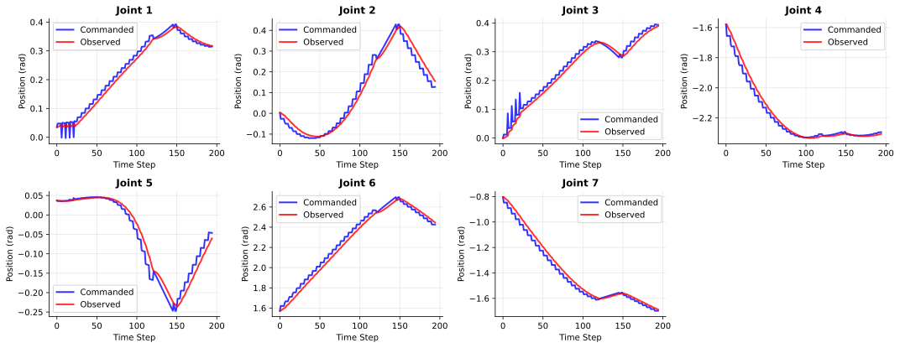
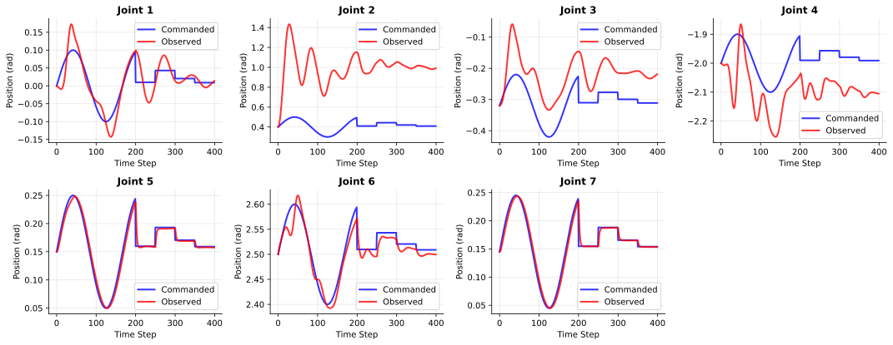
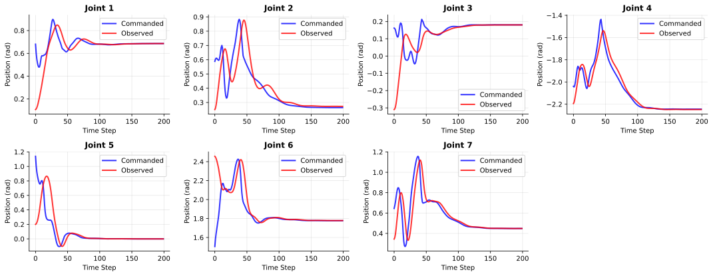

Visual Sim2Real Investigation Journey
Okay, I feel lost. Where am I now?
I was personally very invested in answering these two questions:
- How far are we from sim-to-real-ing a state-based manipulation policy, trained from scratch, to a real-world executable RGB-based policy without any performance drop?
- If compensating for such drop in performance inevitably requires real-world data, what kind of data should be collected and how should it be used?
Sim-to-real gap is a complicated interplay between (a) joint dynamics gap, (b) contact dynamics gap, (c) visual appearance gap. We specifically wanted to study the visual gap in isolation.
Isolating the Visual Gap from the others
We wanted to build from the ground up, isolating the visual gap from the other two gaps. To do so, we aimed to train a state-based policy with zero gap from joint-level and contact-level dynamics.
For a simple object picking task, getting there was pretty easy. We generated the dataset using simple motion planning — smooth interpolation between current state and target grasp pose:

With this dataset, we trained a BC policy and deployed it in real-world with decent success rate, practically no performance drop. The behavior didn't exploit too much of the dynamics, so unmodeled dynamics gaps could be minimized.
It was a blissful ignorance — whatever transfer happens after this point can all be attributed to the visual gap. We were able to study visual sim2real aspects in isolation. Getting the extrinsics right really does matter a lot, even more than we thought.
Expanding Tasks via RL
We wanted more tasks. Motion planning didn't get us far for mug hang, bimanual handover, bimanual object lift. Once more contacts are involved, naive motion planning sucked quick. We decided to use reinforcement learning as a behavior generation tool.
In hindsight — we didn't have to. But the major reason was: in the context of real world data collection dominating robot manipulation learning, sim2real only makes sense for superhuman behaviors that can't be generated from teleoperation. RL in simulation was practically the only proven way to generate such behaviors.
Matching the gain settings for PD controllers
Our controller settings were super stiff, for good reason — motion planning needs well-tracking position controllers. But with super stiff settings, RL really struggled to learn useful behaviors.
The default gains in Isaac's FR3 USD configurations are so compliant that joint position targets become merely a shaped form of torque control:

Compliant controllers are harder to Sim-to-Real
Action space matters
This is what the joint-level trajectories look like if we learn in absolute joint space:
